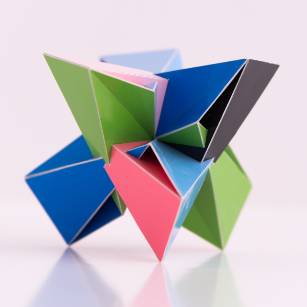

A Radial Hepta Twister with A4 Symmetry

Picture copyright by PhotoArt Studio Hörby
This model was built in 2013 and its dimensions is around 11 cm x 11 cm x 11 cm.
This polyhedron only consists of regular heptagons that are folded over a diagonal. There are different ways in which you can fold a regular heptagon and for this polyhedron the folding is done in a 'W' shape.
The polyhedron has the same rotational symmetry as a tetrahedraon, i.e. without the reflections. I like these kind of symmetries where the reflections are missing. This has polyhedron has some more special properties. One of them is that four seperate vertices end up at the same spot: the centre of the polyhedron. Besides that certain faces end up on top of eachother. This makes the polyhedron perhaps a bit controversial.
I like the resulting model I think it looks absolutely fascinating. I found some more polyhedra where faces ended in the same plane on top of each other, but these usually result in flaps that can move in any direction. Here they are locked in place.
When two faces end up at the same place, you will need to choose which to show. For the model this was easy: one side has one colour, the other side the other colour. For the 3D model at the top left however the engine decides by checking which face is closer to the camera. Because of rounding problems that can be different. As a consequence the model in the 3D viewer doesn't really reflect how the paper model looks like: the colours for these flaps might be different.
Last Updated
2019-10-13